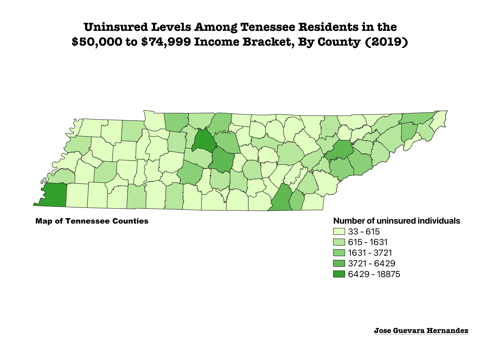

homework 6
Jose Guevara Hernandez

Description
This is a map that shows estimated levels of uninsured residents of Tennessee in 2019, specifically, those that earn a yearly
salary between $50,000 and $74,999. I used census data to map the estimated uninsured population for the given income range in each county.
As you can tell by the graph, the counties with darker shades have more uninsured individuals. As I made this map however, I realized that I was not accounting for county
population. This means that while counties with a darker shade of green have more uninsured individuals, they likely also have higher populations. In the future, it would be interesting to map the
rate of uninsurement rather than the total number. Still, we can see from the graph that thousands of people within this income range are uninsured, suggesting
that the state might need policy solutions to address it.
Data used for this project
CSV dataset
Link to GeoJSON